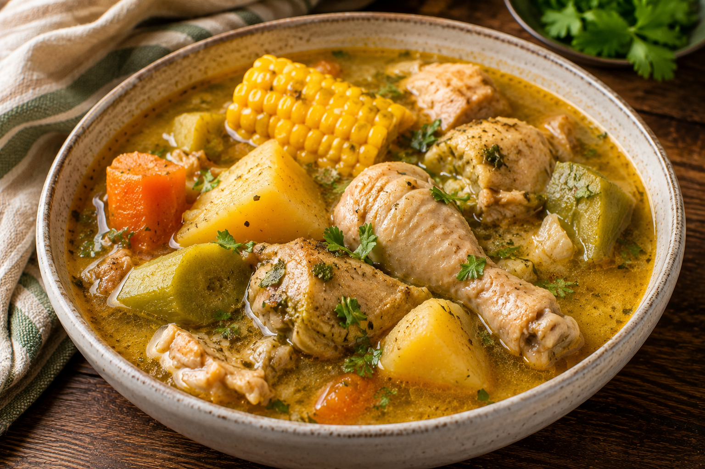
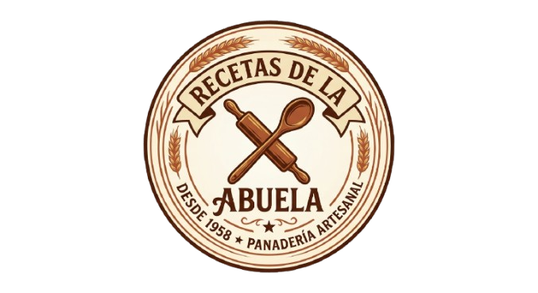
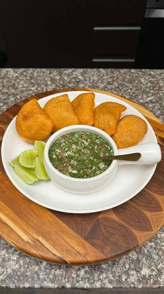
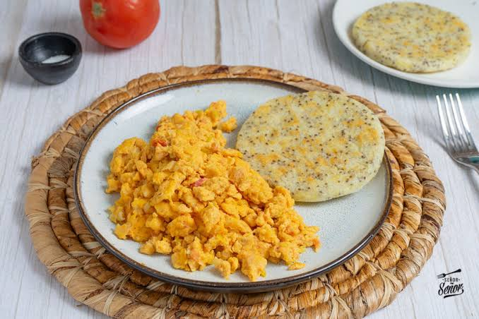
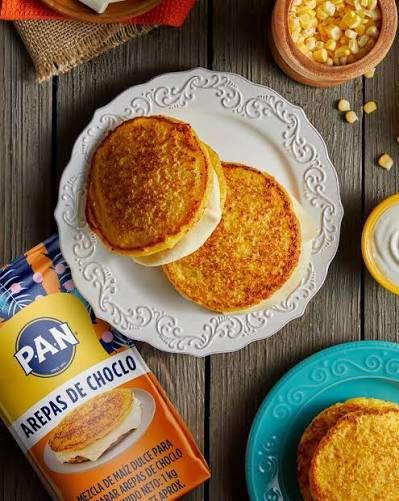
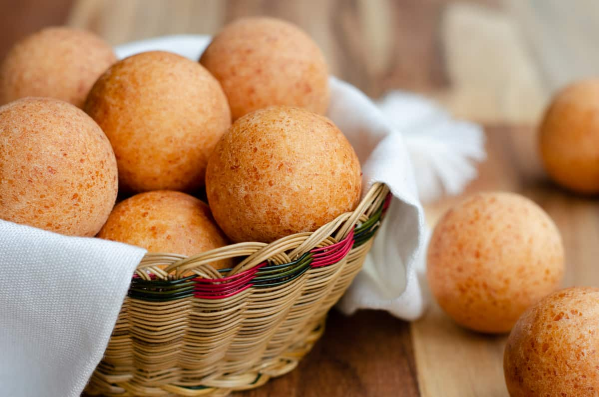

Sancocho casero de la abuela
La receta que ha pasado de generación en generación en mi familia, con el secreto de siempre.


La receta que ha pasado de generación en generación en mi familia, con el secreto de siempre.

Empanadas crujientes acompañadas de un delicioso ají casero.

Huevos pericos acompañados con arepa blanca, ideales para el desayuno.

Dulces y suaves, perfectas para el desayuno.

La receta infaltable en diciembre.